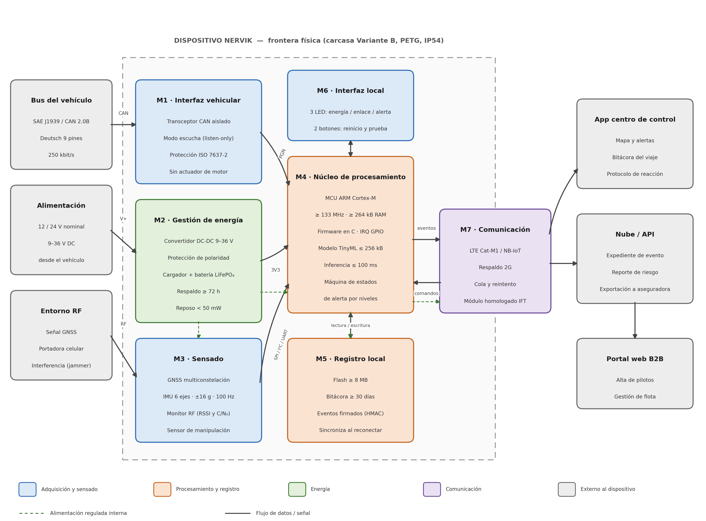

Semana 5 · Diseño de producto: PDS y arquitectura del sistema
Objetivo de la semana
Convertir la idea de Nervik en requisitos técnicos medibles y verificables, y definir cómo se conectan sus componentes.
Proyecto Nervik: sistema de monitoreo autónomo anti-interferencia para autotransporte de carga
Equipo Equipo 2: Andrik, Juan Pablo y Mauro
Versión 1.0, 2 de octubre de 2026
1. Definición del producto
Nervik es un dispositivo embebido que se instala en la cabina del tractocamión, se conecta al bus de diagnóstico y procesa telemetría de forma local . Detecta la pérdida deliberada de señal provocada por jammers, guarda un registro inalterable de lo ocurrido mientras no hay conectividad y alerta al centro de control cuando la comunicación regresa. La detección usa TinyML en el propio dispositivo, sin depender de la nube.
Exclusiones del alcance
Son decisiones de diseño, no omisiones:
Sin paro ni bloqueo de motor. El dispositivo solo escucha el bus y nunca inyecta tramas, lo que elimina el riesgo de una condición insegura en movimiento.Sin actuar sobre frenos, dirección, transmisión ni otros sistemas críticos.
Sin sensado dentro del remolque (se deja una interfaz reservada para el futuro).
Sin recálculo de ruta: la decisión la toma el centro de control.
Corrección técnica
Los tractocamiones usan SAE J1939 con conector Deutsch de 9 pines , no el OBD-II de 16 pines de los autos. La PDS adopta J1939 como interfaz principal y deja el adaptador OBD-II solo para banco de pruebas.
2. Usuario y contexto de uso
Aspecto
Definición
Comprador
Dueño de flota o gerente de seguridad de una transportista mediana (20 a 200 tractocamiones)
Operador
Personal del centro de monitoreo, que recibe las alertas y ejecuta el protocolo
Afectado
El chofer, que no interactúa con el dispositivo durante la marcha
Beneficiario indirecto
Aseguradora o broker, que recibe el expediente del evento como evidencia
Corredores
México–Puebla–Veracruz, México–Querétaro y el Bajío
Instalación
Detrás o debajo del tablero, fuera de la vista y del alcance del chofer
Condiciones
Vibración, calor por asoleamiento, variación de tensión al arrancar y cobertura celular intermitente
3. Especificación de Diseño de Producto (PDS)
Prioridad: O = obligatorio (si no se cumple, el producto no sirve) · D = deseable (negociable frente a costo o plazo).
Desempeño Interfaces Energía Procesamiento y datos Físico y ambiente Fiabilidad y normas Costo e instalación
N.º
Requisito
Valor objetivo
Prio.
Verificación
F-01
Detección de interferencia RF
≤ 5 s desde el inicio hasta la clasificación
O
Cámara con generador de RF
F-02
Falsos positivos
≤ 1 por cada 1,000 km en ruta mixta
O
Prueba en campo con bitácora comparada
F-03
Criterio multiseñal
≥ 3 señales simultáneas (C/N₀ de GNSS, RSSI celular, tramas J1939, IMU)
O
Revisión de firmware
F-04
Inferencia local
≤ 100 ms por ventana
O
Temporizador en el MCU
F-05
Operación sin conectividad
100 % de detección y registro sin enlace celular
O
Prueba con módem deshabilitado
F-06
Posicionamiento
≤ 5 m CEP; TTFF en caliente ≤ 2 s
O
Contra referencia GNSS
F-07
Posición durante el bloqueo
Deriva por IMU ≤ 200 m tras 60 s sin GNSS
D
Trayecto conocido
F-08
Alertas por niveles
Tres niveles con acción definida
O
Prueba de máquina de estados
F-09
Transmisión diferida
100 % de eventos en ≤ 60 s al recuperar enlace
O
Prueba de reconexión
N.º
Requisito
Valor objetivo
Prio.
Verificación
I-01
Interfaz con el vehículo
J1939 sobre CAN 2.0B, Deutsch 9 pines, 250 kbit/s (soporte 500)
O
Prueba en unidad real
I-02
Modo del bus
Solo escucha: cero tramas transmitidas
O
Analizador CAN
I-03
Parámetros leídos
Velocidad, RPM, freno, odómetro, combustible
O
Decodificación de PGN
I-04
Comunicación
LTE Cat-M1 / NB-IoT con respaldo 2G, SIM multioperador
O
Registro en red
I-05
Interfaz local
3 LEDs (energía, enlace, alerta) y 2 botones (reinicio, autoprueba)
O
Inspección
I-06
Expansión
Puerto reservado para sensor de remolque
D
Esquemático
I-07
Servicio
Actualización remota (FOTA) con reversión
D
Prueba de actualización
N.º
Requisito
Valor objetivo
Prio.
Verificación
E-01
Tensión de entrada
12/24 V; rango 9 a 36 V DC
O
Fuente variable
E-02
Consumo en operación
≤ 2 W promedio
O
Analizador de potencia
E-03
Consumo en reposo
≤ 50 mW con motor apagado
O
Analizador de potencia
E-04
Autonomía con batería
≥ 72 h registrando sin alimentación del vehículo
O
Prueba de descarga
E-05
Protección eléctrica
Polaridad, sobretensión y transitorios (ISO 7637-2)
O
Prueba de pulsos
E-06
Detección de desconexión
Evento y alerta ≤ 10 s tras perder alimentación
O
Prueba de desconexión
N.º
Requisito
Valor objetivo
Prio.
Verificación
P-01
Procesador
ARM Cortex-M 32 bits, ≥ 133 MHz, ≥ 264 kB RAM
O
Selección de componente
P-02
Modelo de IA
TinyML ≤ 256 kB
O
Tamaño del binario
P-03
Bitácora
Flash ≥ 8 MB; ≥ 30 días sin sobrescribir
O
Prueba de llenado
P-04
Integridad
Cada evento firmado con HMAC-SHA256 y marca de tiempo
O
Verificación criptográfica
P-05
Resistencia a borrado
No se puede borrar ni editar desde el equipo ni la app
O
Intento de alteración
P-06
Reloj
Deriva ≤ 2 s/día sin GNSS
D
Contra reloj patrón
N.º
Requisito
Valor objetivo
Prio.
Verificación
M-01
Dimensiones
≤ 90 × 60 × 25 mm
O
Medición
M-02
Masa
≤ 150 g con batería
O
Pesaje
M-03
Geometría
Variante B: cuña biselada
O
Contra modelo CAD
M-04
Material
PETG liso, impresión FDM o SLA
O
Inspección
M-05
Protección
IP54
D
Ensayo de ingreso
M-06
Montaje
Soporte con cinchos, sin perforar
O
Prueba de instalación
M-07
Discreción
Fuera de la vista del chofer y sin indicadores visibles desde fuera
O
Inspección en unidad
M-08
Vibración
Sin fallas tras ISO 16750-3
D
Mesa vibratoria
A-01
Temperatura de operación
−10 °C a +70 °C
O
Cámara climática
A-02
Temperatura de almacenamiento
−20 °C a +85 °C
O
Cámara climática
A-03
Humedad
5 % a 95 % sin condensación
D
Cámara climática
A-04
Altitud
Hasta 3,000 m
D
Hojas de datos
N.º
Requisito
Valor objetivo
Prio.
Verificación
R-01
Vida útil
5 años en servicio
O
Análisis de confiabilidad
R-02
Batería de respaldo
≥ 1,000 ciclos con ≥ 80 % de capacidad
D
Hoja de datos
R-03
Mantenimiento
Cero intervenciones el primer año
D
Análisis de diseño
R-04
Autoprueba
Por botón, resultado en LED en ≤ 30 s
O
Prueba funcional
R-05
MTBF
≥ 40,000 h
D
Cálculo de confiabilidad
N-01
Homologación RF
Módulo celular homologado ante el IFT
O
Certificado del proveedor
N-02
Seguridad eléctrica
NOM-001-SCFI en lo aplicable
O
Revisión y ensayo
N-03
Conservación de datos
Compatible con NOM-151-SCFI
D
Asesoría
N-04
Datos personales
LFPDPPP: aviso de privacidad y minimización
O
Revisión documental
N-05
No interferencia
No altera ningún sistema del tractocamión
O
Prueba antes/después
N-06
Falla segura
Ante falla interna queda inerte
O
Inyección de fallas
N.º
Requisito
Valor objetivo
Prio.
Verificación
C-01
Costo de BOM
≤ $650 MXN por unidad (lote de 100)
O
Cotizaciones
C-02
Manufactura y ensamble
≤ $250 MXN por unidad (lote de 100)
D
Cotización de maquilador
C-03
Precio de venta
$1,800 MXN instalado + $300 MXN/mes por servicio
D
Cartas de intención
C-04
Componentes únicos
≤ 45 referencias
D
Conteo en BOM
C-05
Disponibilidad
Cero componentes con entrega > 8 semanas o fuente única
O
Cadena de suministro
C-06
Volumen
Piloto de 30–50 unidades; escalable a 500/año
D
Plan de manufactura
C-07
Fabricación
PCB de 2–4 capas en Altium, SMD estándar, maquilador nacional
O
Archivos de fabricación
U-01
Tiempo de instalación
≤ 10 min, una persona, sin herramienta especial
O
Prueba cronometrada
U-02
Instalación no invasiva
Sin cortar cables, soldar ni perforar
O
Inspección
U-03
Puesta en servicio
Alta en la app en ≤ 5 min
O
Prueba con usuario
U-04
Operador
Cero acciones del chofer durante la marcha
O
Diseño de interacción
U-05
Documentación
Manual de instalación, protocolo de reacción y formato de expediente
O
Entrega documental
U-06
Exportación de evidencia
PDF y JSON/CSV con firma verificable
O
Prueba de exportación
4. Arquitectura del sistema
Siete módulos dentro del dispositivo y tres elementos externos. Separarlos permite validar cada bloque por su cuenta antes de integrar.

Módulo
Función
Consideraciones de diseño
M1 · Interfaz vehicular Leer la telemetría del camión
Transceptor CAN aislado, protegido contra transitorios de 24 V y solo en modo escucha
M2 · Energía Alimentar y sostener ante cortes
DC-DC de 9 a 36 V, protección de polaridad y batería LiFePO₄ de respaldo
M3 · Sensado Observar el entorno físico y de radio
GNSS multiconstelación, IMU de 6 ejes, monitor de C/N₀ y RSSI, y sensor de apertura de carcasa
M4 · Procesamiento Decidir localmente si hay un evento
ARM Cortex-M con firmware en C; aloja el modelo TinyML y la máquina de estados. Es el único módulo que decide
M5 · Registro local Conservar evidencia inalterable
Flash con bitácora circular y eventos firmados y encadenados; sostiene la propuesta de valor ante la aseguradora
M6 · Interfaz local Mostrar el estado al instalador
3 LEDs y 2 botones
M7 · Comunicación Enlazar con el exterior cuando se pueda
Módem LTE Cat-M1 / NB-IoT homologado con cola persistente; si falla, la detección y el registro siguen
Interfaces entre módulos
Clave
Entre
Protocolo
Características
IF-1
Vehículo → M1
CAN 2.0B / J1939
250 kbit/s, Deutsch 9 pines
IF-2
M1 → M4
SPI o CAN integrado
Tramas por PGN, por interrupción
IF-3
M3 → M4
UART, I²C, SPI
GNSS por UART, IMU por SPI a 100 Hz, monitor RF por I²C
IF-4
M4 ↔ M5
SPI
Escritura de eventos firmados y lectura para sincronizar
IF-5
M4 ↔ M7
UART / comandos AT
Cola de eventos, registro en red y FOTA
IF-6
M4 ↔ M6
GPIO
LEDs y botones con antirrebote
IF-7
M2 → todos
Rieles 3V3 y 5V
Secuencia de arranque y aviso de corte a M4
IF-8
M7 ↔ Nube
HTTPS o MQTT sobre TLS
Autenticación mutua por certificado
5. Máquina de estados de alerta
La respuesta es gradual y en ningún nivel actúa sobre el vehículo . Solo la persistencia del patrón sube el nivel, para que los falsos positivos no destruyan la confianza del centro de control.
Nivel
Se activa cuando
Acción
Latencia
N0 · Normal Telemetría, GNSS y enlace celular presentes
Registro periódico, sin notificar
Continuo
N1 · Observación Se degrada una sola señal
Más muestreo y marca en bitácora, sin alerta
≤ 2 s
N2 · Sospecha Se degradan dos o más señales con el camión en movimiento
Alerta silenciosa si hay enlace; si no, encola el evento
≤ 5 s
N3 · Evento confirmado Pérdida total de GNSS y celular más movimiento anómalo o desvío
Registro forense firmado, LED de alerta y envío prioritario al reconectar
≤ 5 s
6. Trazabilidad de necesidad a requisito
Necesidad del usuario
Requisitos
Módulos
Seguir funcionando cuando el jammer anula GPS y celular
F-01, F-03, F-05, E-04
M3, M4, M5
Que las falsas alarmas no erosionen la confianza
F-02, F-03, F-08
M3, M4
Evidencia confiable de lo ocurrido durante la ceguera
P-03, P-04, P-05, U-06
M4, M5
No inmovilizar unidades para instalar
U-01, U-02, M-06
M1, M2
No comprometer la seguridad del chofer ni del vehículo
I-02, N-05, N-06
M1, M4
Competir con el gasto actual en rastreo y custodia
C-01, C-02, C-03
Todos
7. Riesgos de diseño
Riesgo
Mitigación
Prioridad
El acceso a J1939 varía entre marcas y años
Validar en al menos tres marcas antes de congelar el diseño
Alta
Más falsos positivos de lo esperado en ruta real
Recolectar datos de ruta antes de entrenar; umbral configurable por flota
Alta
Módulo celular sin homologación IFT
Verificar el certificado antes de comprar; tener un módulo alterno
Alta
Los eventos por flota son mucho menos de lo que sugiere el mercado
Entrevistar a 8–10 gerentes de seguridad y pedir conteo de 12 meses
Alta
La aseguradora no acepta el expediente como evidencia
Revisar el formato con un ajustador
Media
El consumo en reposo descarga la batería del camión
Medir desde el primer prototipo; modo de hibernación
Media
El BOM supera el objetivo
Cotizar con dos distribuidores y definir sustitutos
Media
Conclusión
El requisito que condiciona a todos
F-02, la tasa de falsos positivos. Es el único que no se puede comprobar en banco y requiere kilómetros reales de ruta, así que conviene recolectar datos en paralelo con el diseño del circuito, no después.
Para la etapa de viabilidad (semana 7 ) se necesitan: el BOM cotizado contra C-01, la estimación del área de la PCB, el presupuesto de consumo por módulo, un plan de pruebas por requisito y una validación comercial mínima con transportistas y una aseguradora.